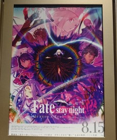

2020年度のまとめ（2021/03/31）
助教の3年目が終わりました．新型肺炎による未曾有の危機が世を騒がせている今日このごろが1年ほど続いておりますが，みなさまいかがお過ごしでしょうか．
今年も形式的に1年のまとめなどを書き連ねておきます．
筆頭で発表した論文（Programmable Filament）では，Honorable mention awardを頂戴いたしました．感謝します．採択された論文の中の上位5％程度が選出対象となる賞です．すごいです．また，昨年（2019年度）に投稿していた論文が第18回芸術科学会論文賞に選出されました．こちらも大変光栄です．感謝します．
投稿中の論文としてCHI2021で発表予定のPaperが1件あります（共著）．いつもお世話になっているTexas A&M（HCIED Lab）のJeeeun Kim先生と，あちらの学生さんであるHimani Deshpandeによるものです．実は，昨年僕がメインに進めていた（不採択だった）プロジェクトをリブートしてもらったもので，システムの実装や予備実験などをお手伝いしています．水やりした甲斐があったのかもしれません．乞うご期待．
また，新しいネタで論文を1本執筆中です．締切が来週に迫っているのですが，まだ埋まりきっていないところもあり，ひいひい言いながら書いています（このまとめを書いている場合ではないのですが…）．
そういうわけで，来年度も引き続き研究活動に励んで参ります．筆頭でやりたいことをやっていくつもりですが，少しずつ元気と時間が失われてきている感があります．共同研究はいつでも歓迎しております．
研究業績 （2020/04～2021/03 のもの）
UIST2020にPaperが2件採択（筆頭＆共著）筆頭で発表した論文（Programmable Filament）では，Honorable mention awardを頂戴いたしました．感謝します．採択された論文の中の上位5％程度が選出対象となる賞です．すごいです．また，昨年（2019年度）に投稿していた論文が第18回芸術科学会論文賞に選出されました．こちらも大変光栄です．感謝します．
投稿中の論文としてCHI2021で発表予定のPaperが1件あります（共著）．いつもお世話になっているTexas A&M（HCIED Lab）のJeeeun Kim先生と，あちらの学生さんであるHimani Deshpandeによるものです．実は，昨年僕がメインに進めていた（不採択だった）プロジェクトをリブートしてもらったもので，システムの実装や予備実験などをお手伝いしています．水やりした甲斐があったのかもしれません．乞うご期待．
また，新しいネタで論文を1本執筆中です．締切が来週に迫っているのですが，まだ埋まりきっていないところもあり，ひいひい言いながら書いています（このまとめを書いている場合ではないのですが…）．
そういうわけで，来年度も引き続き研究活動に励んで参ります．筆頭でやりたいことをやっていくつもりですが，少しずつ元気と時間が失われてきている感があります．共同研究はいつでも歓迎しております．
その他の活動
30歳になりました担当授業のオンライン教材などをこしらえた
全く外出しない1年でした
【論文投稿と新年度のスタートを乗り越えたら，このあたりになにか駄文を追加するかもしれません】
雑記
日々いろいろなことをやっているのですが，ほぼやった時点で満足してしまって発信できていないです．その一部を吐き出しておきます．
ギターをよく練習した
引きこもり生活を余儀なくされておりましたが，おかげでかなりギターの練習がはかどりました．いずれ動画にでも撮ってみようかと思っていますが，1年前よりかなり指が動くようになりました．画像はギターのトーンポット（のコンデンサ）を改良してみたの図．トーンを意識した演奏なんてしませんが，ノイズとか減るのかなぁと思って付け替えてみた次第です．違いはわかりません．練習．
引きこもり生活を余儀なくされておりましたが，おかげでかなりギターの練習がはかどりました．いずれ動画にでも撮ってみようかと思っていますが，1年前よりかなり指が動くようになりました．画像はギターのトーンポット（のコンデンサ）を改良してみたの図．トーンを意識した演奏なんてしませんが，ノイズとか減るのかなぁと思って付け替えてみた次第です．違いはわかりません．練習．
オンライン教材を作る
今年，猛烈に時間をかけたのがオンライン講義用の資料・授業映像作成です． 20分程度の動画を週に数本作るのですが，スライドとスクリプト準備，収録，編集の作業で丸々1日かかることも珍しくなく，ずっとVegas（映像編集ソフト）と向かい合っていました． 大変でしたが，なにかと学びも多かったです（喋り方や収録環境など）． なにより学生さんにちゃんとした講義を提供できているかどうかが最重要ですので，こういう努力も必要でしょう．
今年，猛烈に時間をかけたのがオンライン講義用の資料・授業映像作成です． 20分程度の動画を週に数本作るのですが，スライドとスクリプト準備，収録，編集の作業で丸々1日かかることも珍しくなく，ずっとVegas（映像編集ソフト）と向かい合っていました． 大変でしたが，なにかと学びも多かったです（喋り方や収録環境など）． なにより学生さんにちゃんとした講義を提供できているかどうかが最重要ですので，こういう努力も必要でしょう．
ゲーミングチェアを買った
神奈川の謎の家具屋で購入した椅子を10年近く使っていたのですが，いよいよ椅子としての役割を果たせなくなったため，新しい椅子，Bauhutteのゲーミングチェアを買いました． 座り心地は普通です．背もたれがリクライニングするので，疲れたときによく座ったまま寝ています． 頭部についているクッションはダイソーで買いました．裏にゴムバンドが付いているんですが，一度切って3Dプリンタ製のバックルをつけています．緊張感のなさがウリですね．
神奈川の謎の家具屋で購入した椅子を10年近く使っていたのですが，いよいよ椅子としての役割を果たせなくなったため，新しい椅子，Bauhutteのゲーミングチェアを買いました． 座り心地は普通です．背もたれがリクライニングするので，疲れたときによく座ったまま寝ています． 頭部についているクッションはダイソーで買いました．裏にゴムバンドが付いているんですが，一度切って3Dプリンタ製のバックルをつけています．緊張感のなさがウリですね．
江ノ島
2020年の唯一と言ってもいい遠出は江ノ島でした（自粛期間中ではない）． ちょっと涼しい時期にふらっと行ってきたのですが，江ノ島もとい極楽寺駅周辺から海っぺりを望むルートは何度でも見られます．できれば，あじさいの時期に行きたいのですが，どうなることやら．
2020年の唯一と言ってもいい遠出は江ノ島でした（自粛期間中ではない）． ちょっと涼しい時期にふらっと行ってきたのですが，江ノ島もとい極楽寺駅周辺から海っぺりを望むルートは何度でも見られます．できれば，あじさいの時期に行きたいのですが，どうなることやら．

映画
人間を2種類に分けたときに，ほとんど映画を見ない側に分類されるタイプの人間なのですが，ここ数年になって何かと映画を見るように，場合によっては映画館に足を運ぶようになりました．成長． 画像はFateの第3章ですが，非常に良かったです．もちろんシン・エヴァンゲリオンも非常に良かったです．
人間を2種類に分けたときに，ほとんど映画を見ない側に分類されるタイプの人間なのですが，ここ数年になって何かと映画を見るように，場合によっては映画館に足を運ぶようになりました．成長． 画像はFateの第3章ですが，非常に良かったです．もちろんシン・エヴァンゲリオンも非常に良かったです．
フードプリンタらしきものを作る
シリンジとリードスクリューなどを組み合わせて，3Dプリンタをフードプリンタらしきものに改造していました．特に研究には発展する予定はなく，趣味です（一応，原理や課題を知っておくという意味で…）． クッキーとしての形状を押し出し時・焼いた後に保てるようなバランスで生地を作るのがとにかく大変です．硬すぎると押し出せず，柔らかすぎると焼いたときにべちょっとしてしまいます． なお，使用した生地はちゃんと食べています．おかげでクッキー作りが少しうまくなりました．
シリンジとリードスクリューなどを組み合わせて，3Dプリンタをフードプリンタらしきものに改造していました．特に研究には発展する予定はなく，趣味です（一応，原理や課題を知っておくという意味で…）． クッキーとしての形状を押し出し時・焼いた後に保てるようなバランスで生地を作るのがとにかく大変です．硬すぎると押し出せず，柔らかすぎると焼いたときにべちょっとしてしまいます． なお，使用した生地はちゃんと食べています．おかげでクッキー作りが少しうまくなりました．
Apex
シーズン7からやり始めて結構夢中になっています．面白いです． シーズン8のスプリット1はなんとかソロダイヤに到達．スプリット2のランクも進めたいのですが，最近回線の調子がよくないようで，しばしば紙芝居ペックスになってしまいます． なおメインキャラはブラッドハウンドで，301あたりをよく使います．マッチしたらピン立ててください．画像は3Dプリンタで作ったウィングマンです．素人ですが塗装もしてみました．まぁまぁ格好良く仕上がったと思います．
シーズン7からやり始めて結構夢中になっています．面白いです． シーズン8のスプリット1はなんとかソロダイヤに到達．スプリット2のランクも進めたいのですが，最近回線の調子がよくないようで，しばしば紙芝居ペックスになってしまいます． なおメインキャラはブラッドハウンドで，301あたりをよく使います．マッチしたらピン立ててください．画像は3Dプリンタで作ったウィングマンです．素人ですが塗装もしてみました．まぁまぁ格好良く仕上がったと思います．
光造形でフィギュアを作る
”この後はパーティーなんだ．誘ってないけど，君のことは好きさ”
”この後はパーティーなんだ．誘ってないけど，君のことは好きさ”
iPad
いよいよ購入してしまいましたiPad．そんなに使いどころもないだろうし，どうしたもんかな～と思っていたのも数日，今では研究用のメモ・スケッチ，ちょっとした読み物，動画閲覧などは大体iPadでやっています． たぶん同じことはPCやスマホでもできるんですが，せっかくならiPadでやってみる，転じて積極的にiPadを使ってなにかできないか探している自分に気づきます．
いよいよ購入してしまいましたiPad．そんなに使いどころもないだろうし，どうしたもんかな～と思っていたのも数日，今では研究用のメモ・スケッチ，ちょっとした読み物，動画閲覧などは大体iPadでやっています． たぶん同じことはPCやスマホでもできるんですが，せっかくならiPadでやってみる，転じて積極的にiPadを使ってなにかできないか探している自分に気づきます．
V
たしか昨年の6月頃，この頃はやりの（視聴者が数十人ぐらいの駆け出し）バーチャルユーチューバーを機械的に見ている期間がありました．絵を描いたりUnityでアプリを作ったりしてウキウキしていたりしました．画像はその過程です．なお，V界隈の新陳代謝は異常で，該当のVTuberはインターネットの海に沈みました．合掌．
たしか昨年の6月頃，この頃はやりの（視聴者が数十人ぐらいの駆け出し）バーチャルユーチューバーを機械的に見ている期間がありました．絵を描いたりUnityでアプリを作ったりしてウキウキしていたりしました．画像はその過程です．なお，V界隈の新陳代謝は異常で，該当のVTuberはインターネットの海に沈みました．合掌．
結構いろんなことに取り組み，自分と向き合う時間もたっぷりあった一年ですがちょっとまとめとして出せることが少ないです（あと締切にあたふたしすぎてまとめる時間がありません．加筆するかもしれません）．
来年度も頑張らずに済むように頑張ります．以上．